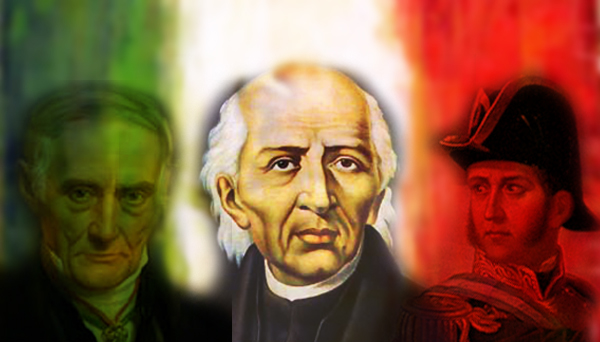

Miguel Hidalgo y Costilla fue un insurgente y sacerdote mexicano. Nació el 8 de mayo de 1753 en la hacienda de San Diego de Corralejo, Pénjamo, Guanajuato. Cursó estudios en el Colegio de San Nicolás, Valladolid (actual Morelia), del que llegó a ser rector.
En 1778, fue ordenado sacerdote y en 1803 se hizo cargo de la parroquia de Dolores, Guanajuato. Se preocupó por mejorar las condiciones de sus feligreses, casi todos indígenas, enseñándoles a cultivar viñedos, la cría de abejas y a dirigir pequeñas industrias de loza y ladrillos.
En 1809 se unió a una sociedad secreta formada en Valladolid, cuyo fin era reunir un congreso para gobernar la Nueva España en nombre del rey Fernando VII, preso de Napoleón y, en su caso, obtener la independencia del país.
Descubiertos los conjurados, la insurrección se trasladó a Querétaro donde se reunió con Ignacio Allende. El 16 de septiembre de 1810, llevando como estandarte a la virgen de Guadalupe, lanzó el llamado grito de Dolores que inició la gesta independentista y, acompañado de Allende, consiguió reunir un ejército formado por más de cuarenta mil personas. Tomaron Guanajuato y Guadalajara, sin embargo, decidieron no ocupar la ciudad de México.
El 11 de enero de 1811, Hidalgo fue derrotado cerca de Guadalajara por las fuerzas realistas. Escapó hacia el norte, pero fue capturado y condenado a muerte. Su cabeza, junto a la de Allende y a la de otros insurgentes, se exhibió como escarmiento en la alhóndiga de Granaditas de Guanajuato.
Tras el establecimiento de la República Mexicana, en 1824, se le reconoció como primer insurgente y Padre de la Patria. En su honor, un estado de la República y la ciudad de Dolores, llevan su nombre. El 16 de septiembre, día en que proclamó su rebelión, se celebra el Día de la Independencia en México.